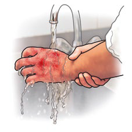
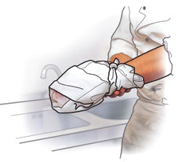

Vergiftungen und Verätzungen
Dieses Kapitel behandelt die Grundsätze der Ersten Hilfe bei den verschiedenen Formen von Vergiftungen und Verätzungen. Doch am besten ist es, vorzubeugen und insbesondere Kinder erst gar nicht in Versuchung zu bringen: Chemikalien, insbesondere Gefahrstoffe, und Arzneimittel sind Verschlusssache!
In Betrieben sind beim Umgang mit Chemikalien, insbesondere Gefahrstoffen, die entsprechenden Sicherheitsvorschriften zwingend zu beachten. Auf die Verwendung vorgeschriebener Schutzausrüstung wird ausdrücklich hingewiesen.
Vergiftungen
Giftstoffe kann man grob in die folgenden Gruppen unterteilen:
- Chemische Stoffe, Haushaltschemikalien
- Arzneimittel
- Pflanzenschutz- und Schädlingsbekämpfungsmittel
- Giftige Pflanzen, Beeren, Pilze
- Verdorbene Lebensmittel
Jede dieser Gruppen enthält mehrere hundert, manche sogar mehrere tausend verschiedene giftige Stoffe.
Das Gift gelangt überwiegend über den Verdauungstrakt in den Körper. Aber auch über die Atemwege und die Haut können bestimmte Giftstoffe aufgenommen werden.
Entscheidend ist, wie schnell erste Anzeichen einer zunächst noch unklaren Gesundheitsbeeinträchtigung in einen Zusammenhang mit einer möglichen Vergiftung gebracht werden.
Symptome
 Hinweise im Umfeld beachten
Hinweise im Umfeld beachten
 Übelkeit, Erbrechen
Übelkeit, Erbrechen
 Bauchschmerzen, Durchfall
Bauchschmerzen, Durchfall
 Atem- und Kreislaufbeschwerden
Atem- und Kreislaufbeschwerden
 Schweißausbrüche
Schweißausbrüche
 Schwindel, Krämpfe
Schwindel, Krämpfe
 Verhaltensänderung bis Bewusstlosigkeit
Verhaltensänderung bis Bewusstlosigkeit
 Atem- und Herz-Kreislauf-Stillstand
Atem- und Herz-Kreislauf-Stillstand
Prävention
Bei der Arbeit mit Chemikalien, insbesondere Gefahrstoffen, ist zwingend die vorgeschriebene Persönliche Schutzausrüstung zu benutzen. Die Sicherheitsvorschriften sind einzuhalten.
Entscheidend für die Schwere der Schädigung sind Giftart, Giftmenge, Konzentration und Einwirkungsdauer der Giftstoffe. Aber auch das Alter, das Körpergewicht und die Widerstandskraft der Betroffenen sind von Bedeutung. Eine bestimmte Giftmenge oder Konzentration kann bei einem Erwachsenen noch relativ harmlos sein, für ein Kind z. B. jedoch eine tödliche Dosis bedeuten.
So helfen Sie richtig
 Vermeiden Sie den Kontakt zur giftigen Substanz.
Vermeiden Sie den Kontakt zur giftigen Substanz.
Tragen Sie geeignete Schutzhandschuhe.
 Bringen Sie die Person aus dem Gefahrenbereich.
Bringen Sie die Person aus dem Gefahrenbereich.
 Überprüfen Sie zuerst Bewusstsein, Atmung und Kreislauf des Vergifteten und führen Sie, falls notwendig, lebensrettende Maßnahmen (Seitenlage, Wiederbelebung usw.) unter Beachtung des Eigenschutzes durch.
Überprüfen Sie zuerst Bewusstsein, Atmung und Kreislauf des Vergifteten und führen Sie, falls notwendig, lebensrettende Maßnahmen (Seitenlage, Wiederbelebung usw.) unter Beachtung des Eigenschutzes durch.
 Notruf/Alarmieren Sie schnellstens den Rettungsdienst.
Notruf/Alarmieren Sie schnellstens den Rettungsdienst.
 Rufen Sie eine Giftnotrufzentrale an, z. B. im Bereich Berlin/Brandenburg unter 030 / 1 92 40. Schildern Sie die Situation und die Vergiftungssymptome und führen Sie die von der Giftnotrufzentrale empfohlenen Maßnahmen durch.
Rufen Sie eine Giftnotrufzentrale an, z. B. im Bereich Berlin/Brandenburg unter 030 / 1 92 40. Schildern Sie die Situation und die Vergiftungssymptome und führen Sie die von der Giftnotrufzentrale empfohlenen Maßnahmen durch.
 Decken Sie die betroffene Person zu (Rettungsdecke).
Decken Sie die betroffene Person zu (Rettungsdecke).
 Betreuen und beruhigen Sie sie bis zum Eintreffen des Rettungsdienstes.
Betreuen und beruhigen Sie sie bis zum Eintreffen des Rettungsdienstes.
 Geben Sie Reste und Verpackungen der eingenommenen Substanzen dem Rettungsdienst mit.
Geben Sie Reste und Verpackungen der eingenommenen Substanzen dem Rettungsdienst mit.
 Dokumentation der Ersten Hilfe, z. B. Eintrag im Meldeblock.
Dokumentation der Ersten Hilfe, z. B. Eintrag im Meldeblock.
| Giftnotruf | |
| Wer? | Wer ist vergiftet? (Alter und Gewicht) |
| Womit? | Welches Gift wurde (sicher/vermutlich) genommen? |
| Wie viel? | Menge/Konzentration des eingenommenen Giftes? |
| Wann? | Zeitpunkt der Giftaufnahme? |
| Welche? | Welche Vergiftungsanzeichen sind erkennbar? |
| Was? | Welche Erste Hilfe wurde bereits geleistet? |
Wenn Sie nicht sicher sind, ob ein eingenommener Stoff giftig ist, können Sie über eine Giftnotrufzentrale nähere Informationen erhalten. Diese Informationszentralen für Vergiftungen sind in fast allen Bundesländern eingerichtet. Sie geben Hinweise für die durchzuführende Erste Hilfe.
Ohne Anweisung einer kompetenten Stelle, wie etwa einer Giftnotrufzentrale oder einer Ärztin bzw. eines Arztes, sollten Sie Vergifteten nichts zu trinken geben, insbesondere keine Milch.
Auch das Herbeiführen von Erbrechen ist nicht nützlich. Insbesondere bei Kleinkindern und Kindern und nach der Einnahme von ätzenden oder Schaum bildenden Stoffen sollte Erbrechen nur nach Rücksprache mit einer Ärztin bzw. einem Arzt oder der Giftnotrufzentrale herbeigeführt werden.
Besondere Vorsicht ist bei Vergiftungen durch Schädlingsbekämpfungsmittel angeraten. Manche dieser Mittel greifen das Nervensystem an und können zu Atem- und Herz-Kreislauf-Stillstand führen. Da es sich um so genannte Kontaktgifte handelt, ist die Ersthelferin oder der Ersthelfer bei der Hilfeleistung selbst gefährdet. Bei der Versorgung von Vergifteten sollten Sie daher immer Schutzhandschuhe tragen. Ist eine Beatmung erforderlich, sollte diese zur eigenen Sicherheit möglichst mit einer Beatmungsmaske erfolgen, damit der unmittelbare Kontakt zum Vergifteten vermieden wird.
Gemäß Gefahrstoffverordnung (GefStoffV) müssen Behälter, die gefährliche Chemikalien enthalten, mit einem Gefahrensymbol gekennzeichnet sein. Ebenso sind auf den Behältern Gefahren- und Sicherheitsratschläge aufzudrucken. Sie können bei einem Unfall erste Informationen für die Erste Hilfe geben.
Verätzungen der Haut
Symptome

 Schmerzhafte meist aufgequollene, farblich veränderte Haut.
Schmerzhafte meist aufgequollene, farblich veränderte Haut.
So helfen Sie richtig
 Benetzte Kleidungsstücke, auch Schuhe und Strümpfe, entfernen (Eigenschutz beachten, z. B. chemikalienfeste Handschuhe tragen).
Benetzte Kleidungsstücke, auch Schuhe und Strümpfe, entfernen (Eigenschutz beachten, z. B. chemikalienfeste Handschuhe tragen).
 Betroffene Körperstellen mit fließendem, handwarmen Wasser gründlich spülen.
Betroffene Körperstellen mit fließendem, handwarmen Wasser gründlich spülen.

 Verbinden Sie die Wunden möglichst keimfrei (z. B. mit einem Verbandtuch aus einem Verbandkasten).
Verbinden Sie die Wunden möglichst keimfrei (z. B. mit einem Verbandtuch aus einem Verbandkasten).
 Notruf/Alarmieren Sie den Rettungsdienst.
Notruf/Alarmieren Sie den Rettungsdienst.
 Dokumentation der Ersten Hilfe, z. B. Eintrag im Meldeblock.
Dokumentation der Ersten Hilfe, z. B. Eintrag im Meldeblock.
Augenverätzungen
 Spülen Sie möglichst mit Unterstützung durch eine zweite Person, die das Auge aufhält (säurefeste Schutzhandschuhe tragen), das betroffene Auge gründlich mit fließendem Wasser für 10-20 Minuten. Das gesunde Auge muss geschützt werden.
Spülen Sie möglichst mit Unterstützung durch eine zweite Person, die das Auge aufhält (säurefeste Schutzhandschuhe tragen), das betroffene Auge gründlich mit fließendem Wasser für 10-20 Minuten. Das gesunde Auge muss geschützt werden.
 Bedecken Sie im Anschluss das betroffene Auge mit einem keimfreien Verband. Zur Ruhigstellung sind beide Augen zu verbinden.
Bedecken Sie im Anschluss das betroffene Auge mit einem keimfreien Verband. Zur Ruhigstellung sind beide Augen zu verbinden.
 Notruf/Alarmieren Sie den Rettungsdienst.
Notruf/Alarmieren Sie den Rettungsdienst.
 Dokumentation der Ersten Hilfe, z. B. Eintrag im Meldeblock.
Dokumentation der Ersten Hilfe, z. B. Eintrag im Meldeblock.